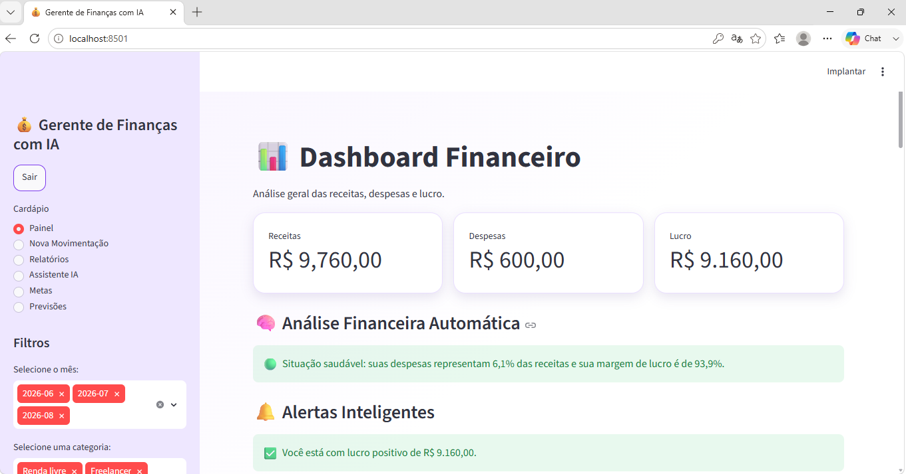

Projeto principal
AI Finance Manager
Sistema financeiro com login, dashboard interativo, PostgreSQL, relatórios em Excel/PDF, metas financeiras, assistente inteligente e previsão de receitas com Machine Learning.
Python
Streamlit
PostgreSQL
Machine Learning
Ver projeto